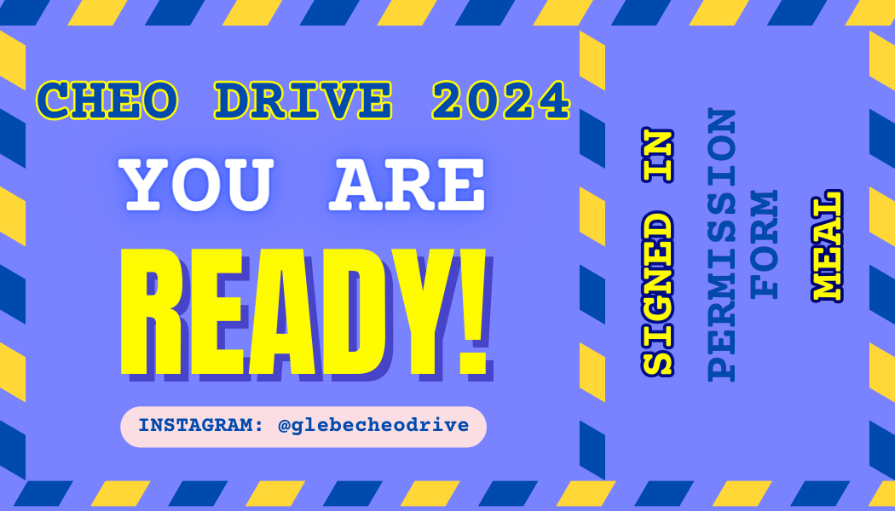

Heather Wood
Heather brings a strong policy-centered perspective to TALOH, combining professional insight, analytical thinking, and clear communication to support clients and organizations.
About Me
Heather's professional experience is in ... (manager head boss super bigshot leader title)biography here. This section can describe her policy background, experience, interests, and approach to client support.
Qualifications
Add Heather's qualifications here, such as education, certifications, policy expertise, analytical experience, and professional accomplishments.
Past Projects

Project Example One
Brief description of a policy-related project, consultation, or engagement.

Project Example Two
Brief description of analysis, recommendations, or policy work delivered.
How to Contact
Email: heather@taloh.com
Phone: (555) 333-4444
For policy inquiries, please use the TALOH contact page or reach out directly.